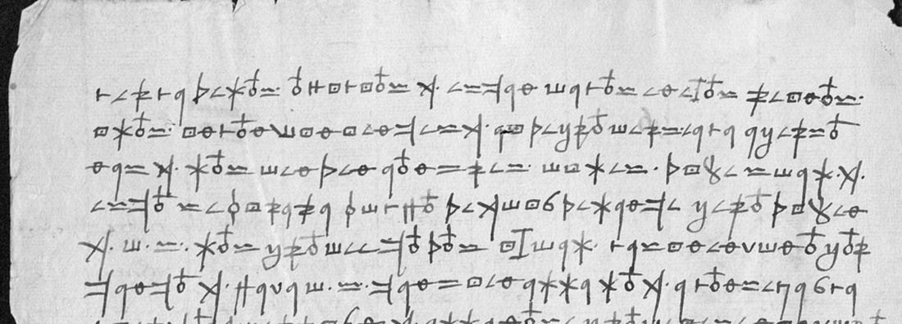

01 The document and the key
AGS 0001 (DECODE image 1) is Ayala’s clear opening page. The cipher runs over AGS 0002–0006, which DECODE shows in the order 8, 2, 3, 6, 4. AGS 0008 is the address leaf, endorsed 1516 and Cardenal de España.
The cipher is a simple substitution of invented signs for Spanish letters. It has a few variants (a written 9 or 6, o with or without a stroke above), a dotted sign for que and a dotted H for Xebres (Chièvres). Words are separated by small spaces or dots. The key is Tomokiyo’s, transcribed in ayala1516/KEY.md. Three signs are not in it: an arch-shaped sign (perhaps cl), a tall I (an s variant) and Φ (= m on AGS 0004).

02 The reading
Spanish as read, with doubtful words marked [?]. The full line-by-line reading is in ayala1516/plain_0002_0003.txt and plain_0004_0006.txt.
Offices (AGS 0002)
cerca de los oficios que estan vacos en estos reynos y los inconvinientes que ay de proverse a personas que los venden a don Xebres … dizen que V. S. los provee todos … por tanto que haga V. S. tan bien alla lo que aconseja, cierto que verian que alla no se proveyese en ninguno, y asi lo escrive Su Alteza. Los oficios que Su Alteza a dado y prometido … al marques de Villena un regimiento de Toledo que era de Baeza, a Rodrigo Niño otro de Plasencia … el regimiento de Cuenca diz que tiene Su Alteza para Vasco de Acuña, hermano de Pedro de Acuña … crea V. S. que quanto esta vaco esta pedido y prometido para alla o hecha la provision.
The King has many servants here who have served him; Cisneros should give them offices, since it is said here that he fills most of them with his own men. The Genoese are referred to him over the Cartagena galleys: provea V. S. alla como vere conviene a servicio del rey; no se altere por carta ni cedula que alla vea, que aca muchas cosas se proveen por ymportunidades.
Castile and Queen Germaine (AGS 0003–0004)
The King was glad of the pacification of the kingdoms and that the Constable and the Infantado stood with Cisneros. Ayala warned His Highness that Queen Germaine trae tratos con franceses, and a marriage with the house of the Duke of Alba is in hand. On AGS 0004: don García de Padilla, the cedula for the Orders, and que obedezcan primero y se castigue, for if disobedience goes unpunished it will spread through the kingdom; the people of Arévalo, and mil males del reyno.
The peace and the voyage (AGS 0005)
la paz se concluyo entre el rey nuestro señor y el rey de Francia, como por los capitulos della vera V. S., que aqui le enbio; manda Su Alteza que luego la haga V. S. pregonar … De la yda hago saber a V. S. que el rey … sabado treynta de agosto, y en el se acordo de partir sin falta … y se partira para Gelanda … todo estara a punto, y dandole Dios [tiempo] enbarcara, y para esto no tiene estorvo ninguno sino el tiempo.
The peace is Noyon (13 August 1516). The secretary Barroso arrived six days earlier; Ayala spoke to the King before him and gave him his credence, and Cisneros’s protests have done much good.
Orders and Toledo (AGS 0006)
pienso que esta llevara lo de las ordenes, y no es posible; yo pido una cedula para que V. S. pueda poner presidentes cuales le pareciere que conviniente … en lo del corregidor de Toledo … V. S. provea de corregidor, que al rey le plazera.
03 What remains
- AGS 0003 lines 18–31: faded, with heavy show-through; only fragments read (…credito a sus avisos…).
- AGS 0004 lines 5–12, 22–27: read letter by letter; the sense is only partly recovered.
- AGS 0006 lines 13–24: the last paragraph, clear in the scan but not yet transcribed.
- Signs outside Tomokiyo’s key: the arch sign, the tall I, Φ, and a dotted sign on AGS 0005 that seems to stand for Francia.
04 Sources
- Archivo General de Simancas, Estado leg. 496 fol. 22, images via DECODE R9954 (login).
- S. Tomokiyo, cryptiana: Spanish ciphers, the Ayala key rebuilt from R10024 (AGS Estado 12/233).
- Documentos inéditos de la época del Cardenal Cisneros (1516–1517), Real Academia de Toledo, no. 36: a different, clear letter of Ayala of the same day (AGS CSR leg. 394).
- P. de Gayangos and V. de la Fuente, Cartas del cardenal … Cisneros dirigidas a don Diego López de Ayala, Madrid 1867: Cisneros’s side of the correspondence.
Notes, key and reading: ayala1516/ in the repository.